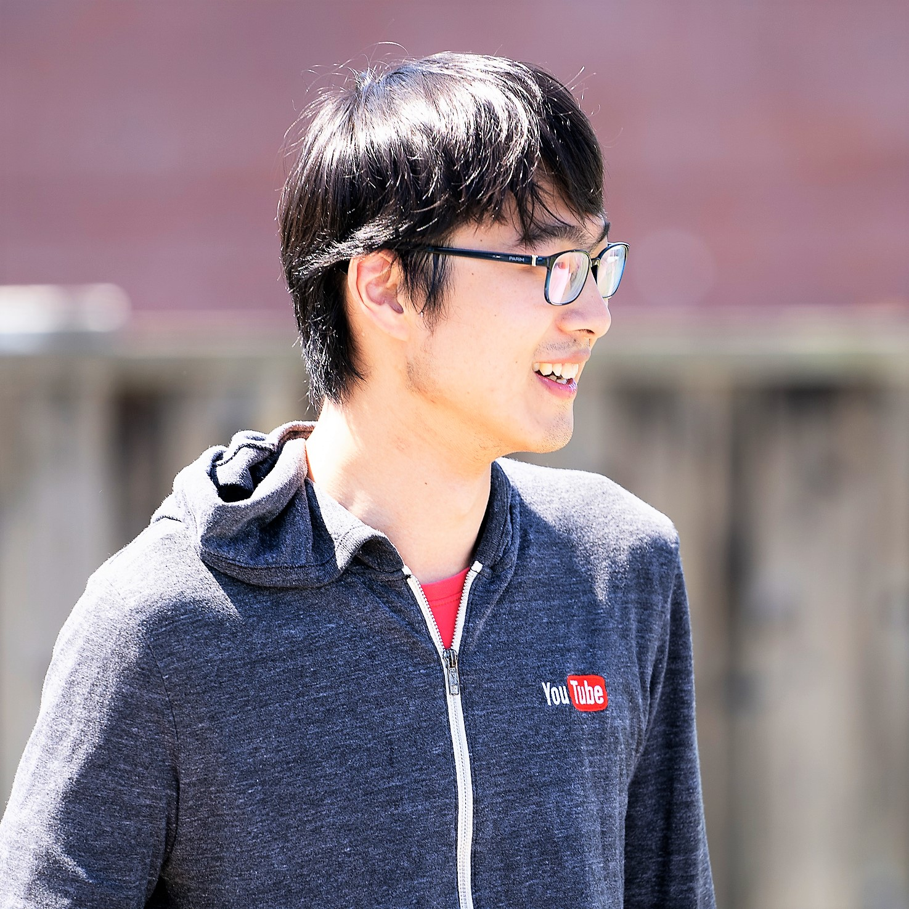

Zhipeng Jia
Ph.D. Candidate, Department of Computer Science, UT Austin
I am a fifth-year Ph.D. student in Computer Science from the University of Texas at Austin. I am advised by Prof. Emmett Witchel. My research covers topics from distributed systems, microservices, serverless computing, to security of cloud GPUs.
I obtained my bachelor's degree in Computer Science from Tsinghua University in Beijing. I was enrolled in Yao Class, which is a pilot Computer Science program advised by Turing Award laureate Prof. Andrew Yao.
During my undergraduate, I was a research intern at Microsoft Research Asia, where I worked with Dr. Eric Chang's group on automatic analysis of large-scale medical data.
My email address is zjia at cs dot utexas.edu. My photo is here. 
Publications
Experience
| May 2021 – Aug 2021 | Katana Graph, Austin – Software Engineer Intern |
| May 2019 – Aug 2019 | Google, Sunnyvale – Research Intern |
| May 2018 – Aug 2018 | Google, Mountain View – Software Engineering Intern |
| Mar 2016 – Jun 2017 | Microsoft Research Asia, Beijing – Research Intern |
| Jun 2015 – Sep 2015 | Google, Mountain View – Software Engineering Intern |
| Feb 2014 – Mar 2015 | Microsoft Research Asia, Beijing – Research Intern |
Last update: Oct 2021